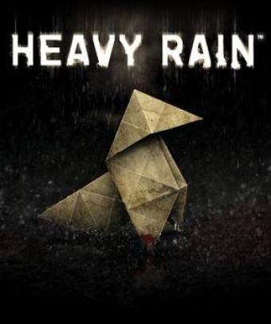
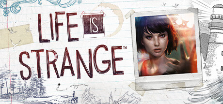
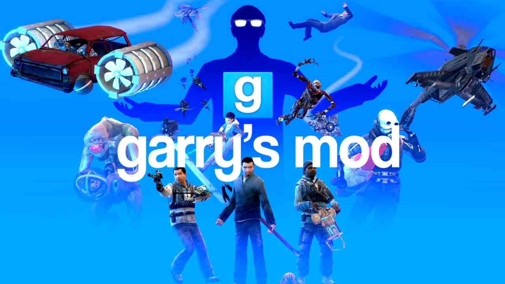
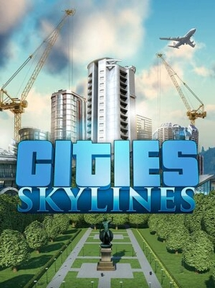

At its core, a video game is a structured, interactive digital experience. If a movie is a story you watch, a video game is a world you actively participate in. You aren't just an observer; your choices and actions drive what happens next.
The Core Ingredients:
Every video game, whether it's a puzzle on a smartphone or an adventure on a TV, relies on three basic elements:
A set of rules: Just like chess, football, or poker, digital games have boundaries and limits. These rules define how the virtual world operates, dictating things like gravity, how fast you can move, or how puzzle pieces can fit together.
A goal or purpose: There is almost always an objective, but is not mandatory. This could be solving a murder mystery, clearing a board of falling blocks, or simply trying to survive in a virtual wilderness.
Instant feedback: This is the magic of interactivity. When you tap a screen or press a button, the digital world reacts immediately. You see the immediate consequences of your actions, which prompts you to make your next decision.
But they are also way more than something to just play with!
Try to think of video games not as a single type of activity, but as a broad medium like film, literature, or music (while also incporporating all, or some, of those). Within that medium, there is a massive variety of experiences, with also plenty of opportunities for artistic expression:
Interactive Novels: Some games are entirely focused on storytelling. You decide what the main character says and does (withing a limited number of options of course), and the ending of the story changes based on the choices you made along the way.


Digital Playgrounds: Others provide a set of tools and a blank canvas. They have no traditional "ending," but instead let you build cities, manage businesses, or design virtual homes. They are truly sanboxes for your own slef-expression!

Dynamic Puzzles: Many focus heavily on logic, requiring strategic planning, resource management, and critical thinking to overcome increasingly complex challenges.

And some... Some are just pure suffering and adrenaline with pretty visuals and an engaging story...